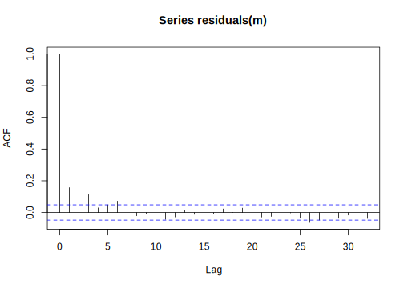
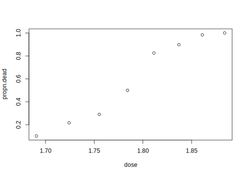
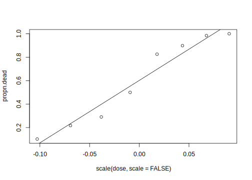
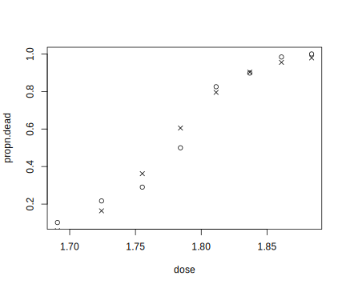
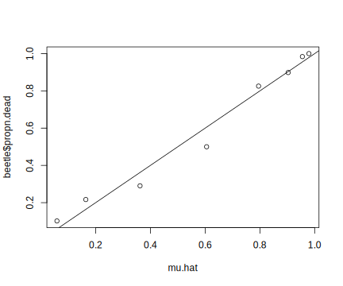
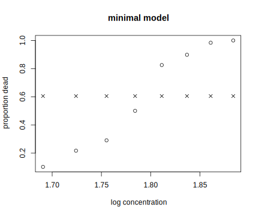
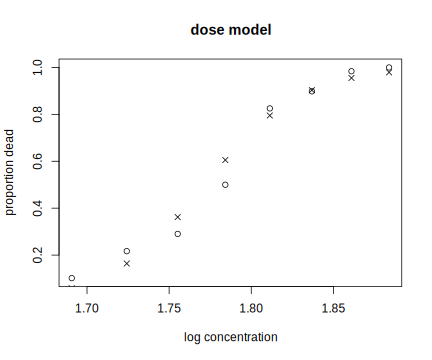
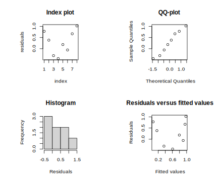

5.2 The essentials of linear modeling theory
Consider a deterministic function \(\phi(\mathbf{x},\beta)\) which takes as input some variable values \(x\) and some fixed values \(\beta\). A simple example would be some variable \(x\) determining the value of another variable \(y\) by multiplying \(x\) with \(\beta\).
\[\begin{equation} y = \beta x \end{equation}\]
Another example with two fixed values \(\beta_0\) and \(\beta_1\) determining \(y\) is:
\[\begin{equation} y = \beta_0 + \beta_1 x \end{equation}\]
We can rewrite the above equation in matrix form as follows.
\[\begin{equation} \begin{split} y=& \beta_0 + \beta_1 x\\ =& \beta_0\times 1 + \beta_1 x\\ =& \begin{pmatrix} 1 & x\\ \end{pmatrix} \begin{pmatrix} \beta_0 \\ \beta_1 \\ \end{pmatrix} \end{split} \end{equation}\]
Because \(y\) is a function of \(x\) and the \(2\times 1\) matrix \(\beta=[\beta_0 \beta_1]^T\), the most general way to write the above function is as we did above:
\[\begin{equation} y = \phi(x,\beta) \end{equation}\]
In a statistical model, we don’t expect an equation like \(y=\phi(x,\beta)\) to fit all the points exactly. For example, we could come up with an equation that, given a word’s frequency, gives a prediction regarding that word’s reaction time:
\[\begin{equation} \hbox{predicted reaction time} = \beta_0 + \beta_1 \hbox{frequency} \end{equation}\]
Given any single value of the frequency of a word, we will not get a perfectly correct prediction of the reaction time for that word. As a concrete example, see this data-set from the languageR library, which allows us to visualize the effect of (log) word frequency on (log) reaction times. This model is technically incorrect, because we have repeated measures; a linear mixed model would be more appropriate. But a simple linear model is sufficient to make the point here:
## Estimate Std. Error t value Pr(>|t|)
## (Intercept) 6.58878 0.022296 295.515 0.000e+00
## Frequency -0.04287 0.004533 -9.459 1.027e-20
Because the predicted values from the linear model don’t exactly predict the observed vlues, we express the dependent variable \(y\) as a non-deterministic function:
\[\begin{equation} y=\phi(x,\beta,\epsilon)=\beta_0+\beta_1x+\epsilon \end{equation}\]
Here, \(\epsilon\) is an error random variable which is assumed to have some PDF (the normal distribution) associated with it. It is assumed to have expectation (mean) 0, and some standard deviation (to be estimated from the data) \(\sigma\). We can write this statement in compact form as \(\epsilon \sim N(0,\sigma)\).
The general linear model is a non-deterministic function like the one above:
\[\begin{equation} Y=f(x)^T\beta +\epsilon \end{equation}\]
The matrix formulation will be written as below. \(n\) refers to the number of data points (that is, \(Y_1,\dots,Y_n\)), and the index \(j\) ranges from \(1\) to \(n\).
\[\begin{equation} Y = X\beta + \epsilon \Leftrightarrow y_j = f(x_j)^T \beta + \epsilon_j, j=1,\dots,n \end{equation}\]
To make this concrete, suppose we have three data points, i.e., \(n=3\). Then, the matrix formulation is
\[\begin{equation} \begin{split} \begin{pmatrix} Y_1 \\ Y_2\\ Y_3 \\ \end{pmatrix} = \begin{pmatrix} 1 & x_1 \\ 1 & x_2 \\ 1 & x_3 \\ \end{pmatrix} \begin{pmatrix} \beta_0 \\ \beta_1 \\ \end{pmatrix}+ \begin{pmatrix} \epsilon_1 \\ \epsilon_2 \\ \epsilon_3 \\ \end{pmatrix}\\ \end{split} \end{equation}\]
We can write this in compact form as follows:
\[\begin{equation} Y = X \beta + \epsilon \end{equation}\]
Y is a \(3\times 1\) matrix, X is a \(3\times 2\) matrix, \(\beta\) \(2\times 1\), and \(\epsilon\) \(3\times 1\).
Here, \(f(x_1)^T = (1~x_1)\), and is the first row of the matrix \(X\), \(f(x_2)^T = (1~x_2)\) is the second row, and \(f(x_3)^T = (1~x_3)\) is the third row.
Note that the expectation or mean of Y, written \(E[Y]\), is \(X\beta\). In a data-set with \(n\) data points, when there are \(p\) parameters, \(\beta\) is a \(p\times 1\) matrix, and \(X\), which is called the design matrix or model matrix, is \(n\times p\).
5.2.1 Least squares estimation: Geometric argument
The above excursion into the matrix formulation of the linear model gives us the ability to understand how the \(\beta\) parameters are estimated.
When we have a deterministic model \(y=\phi(f(x)^T,\beta)=\beta_0+\beta_1x\), this implies a perfect fit to all data points. This is like solving the equation \(Ax=b\) in linear algebra: we solve for \(\beta\) in \(X\beta=y\) e.g., by pre-multiplying by \(X^{-1}\): \(X^{-1}X\beta=X^{-1}y\). For example, if we have:
## [,1] [,2] [,3] [,4]
## [1,] 1 2 2 2
## [2,] 2 4 6 8
## [3,] 3 6 8 10## [,1]
## [1,] 1
## [2,] 5
## [3,] 6We can solve for \(x\) as follows (ginv is a function that computed a so-called generalized inverse for non-square matrices):
## [,1]
## [1,] 1
## [2,] 5
## [3,] 6But when we have a non-deterministic model \(y=\phi(f(x)^T,\beta,\epsilon)\), there is no solution! Now, the best we can do in an equation like \(Ax=b\) is to get \(Ax\) to be as close an approximation as possible to \(b\). In other words, we try to minimize \(\mid b-Ax\mid\).
The goal is to estimate \(\beta\); we want to find a value of \(\beta\) such that the observed Y is as close to its expected value \(X\beta\). In order to be able to identify \(\beta\) from \(X\beta\), the linear transformation \(\beta \rightarrow X\beta\) should be one-to-one, so that every possible value of \(\beta\) gives a different \(X\beta\). This in turn requires that X be of full rank \(p\). So, if a design matrix X is \(n\times p\), then it is necessary that \(n\geq p\). There must be at least as many observations as parameters. If this is not true, then the model is said to be over-parameterized.
Assuming that X is of full rank, and that \(n>p\), Y can be considered a point in n-dimensional space and the set of candidate \(X\beta\) is a \(p\)-dimensional subspace of this space; see Figure 5.1. There will be one point in this subspace which is closest to Y in terms of Euclidean distance. The unique \(\beta\) that corresponds to this point is the least squares estimator of \(\beta\); we will call this estimator \(\hat \beta\).
FIGURE 5.1: Geometric visualization of the distance minimization procedure for estimating the parameters in a linear model.
Notice that \(\epsilon=(Y - X\hat\beta)\) and \(X\beta\) are perpendicular to each other. Because the dot product of two perpendicular (orthogonal) vectors is 0, we get the result:
\[\begin{equation} (Y- X\hat\beta)^T X \beta = 0 \Leftrightarrow (Y- X\hat\beta)^T X = 0 \end{equation}\]
Multiplying out the terms, we proceed as follows. One result that we use here is that \((AB)^T = B^T A^T\).
\[\begin{equation} \begin{split} ~& (Y- X\hat\beta)^T X = 0 \\ ~& (Y^T- \hat\beta^T X^T)X = 0\\ \Leftrightarrow& Y^T X - \hat\beta^TX^T X = 0 \quad \\ \Leftrightarrow& Y^T X = \hat\beta^TX^T X \\ \Leftrightarrow& (Y^T X)^T = (\hat\beta^TX^T X)^T \\ \Leftrightarrow& X^T Y = X^TX\hat\beta\\ \end{split} \end{equation}\]
This gives us the important result:
\[\begin{equation} \hat\beta = (X^TX)^{-1}X^T Y \end{equation}\]
X is of full rank, therefore \(X^TX\) is invertible. One crucial detail, whose significance will only become clear in the chapter on contrast coding, is that the matrix \((X^TX)^{-1}X^T\)—the generalized matrix inverse—is closely related to the design matrix, which in turn determines what comparisons are implied by the \(\beta\) parameters.
Let’s look at a concrete example:
## [,1] [,2] [,3]
## [1,] 1 -1 -1
## [2,] 1 -1 -1
## [3,] 1 -1 1
## [4,] 1 -1 1
## [5,] 1 1 -1
## [6,] 1 1 -1
## [7,] 1 1 1
## [8,] 1 1 1## [1] 3
## attr(,"method")
## [1] "tolNorm2"
## attr(,"useGrad")
## [1] FALSE
## attr(,"tol")
## [1] 1.776e-15Notice that the inverted matrix is also symmetric. We will use this fact soon.
The matrix \(V=X^T X\) is a symmetric matrix, which means that \(V^T=V\).
5.2.2 The expectation and variance of the parameters beta
Our model now is:
\[\begin{equation} Y = X\beta + \epsilon \end{equation}\]
Let \(\epsilon\sim N(0,\sigma)\). In other words, we are assuming that each value generated by the random variable \(\epsilon\) is independent and it has the same distribution, i.e., it is identically distributed. This is sometimes shortened to the iid assumption. So we should technically be writing:
\[\begin{equation} Y = X\beta + \epsilon \quad \epsilon\sim N(0,\sigma) \end{equation}\]
and add that \(Y\) are independent and identically distributed.
Some consequences of the above statements:
- \(E[\epsilon]=0\)
- \(Var(\epsilon)=\sigma^2 I_n\)
- \(E[Y]=X\beta=\mu\)
- \(Var(Y)=\sigma^2 I_n\)
We can now derive the expectation and variance of the estimators \(\hat\beta\). We need a fact about variances: when we want to know \(Var(a\times B)\), where a is a constant and B is a random variable, this variance is \(a^2 Var(B)\). In the matrix setting, Var(AB), where A is a conformable matrix consisting of some constant values, is \(A Var(B)A^T\).
\[\begin{equation} E[\hat\beta] = E[(X^TX)^{-1}X^T Y] = (X^TX)^{-1}X^T X\beta = \beta \end{equation}\]
Notice that the above shows that \(\hat\beta\) is a so-called “unbiased estimator” of \(\beta\). The word unbiased doesn’t mean that every time you compute an estimate of \(\beta\), you are guaranteed to get an accurate estimate of the true \(\beta\)! Think about Type M error.
Next, we compute the variance:
\[\begin{equation} Var(\hat\beta) = Var([(X^TX)^{-1}X^T] Y) \end{equation}\]
Expanding the right hand side out:
\[\begin{equation} Var([(X^TX)^{-1}X^T] Y) = [(X^TX)^{-1}X^T] Var(Y) [(X^TX)^{-1}X^T]^{T} \end{equation}\]
Replacing Var(Y) with its variance written in matrix form \(\sigma^2 I\), and unpacking the transpose on the right-most expression \([(X^TX)^{-1}X^T]^{T}\):
\[\begin{equation} Var(\hat\beta)= [(X^TX)^{-1}X^T] \sigma^2 I X[(X^TX)^{-1}]^{T} \end{equation}\]
Since \(\sigma^2\) is a scalar we can move it to the left, and any matrix multiplied by I is the matrix itself, so we ignore I, getting:
\[\begin{equation} Var(\hat\beta)= \sigma^2 [(X^TX)^{-1}X^T X[(X^TX)^{-1}]^{T} \end{equation}\]
Since \((X^TX)^{-1}X^T X = I\), we can simplify to
\[\begin{equation} Var(\hat\beta)= \sigma^2 [(X^TX)^{-1}]^{T} \end{equation}\]
Now, \((X^TX)^{-1}\) is symmetric, so \([(X^TX)^{-1}]^T=(X^TX)^{-1}\). This gives us:
\[\begin{equation} Var(\hat\beta)= \sigma^2 (X^TX)^{-1} \end{equation}\]
Let’s make this concrete using the lexdec data-set as an example:
## (Intercept) x
## 1 1 4.860
## 2 1 4.605
## 3 1 4.997
## 4 1 4.727## [,1]
## (Intercept) 6.58878
## x -0.04287## [1] 0.2353## (Intercept) x
## (Intercept) 0.0004971 -9.760e-05
## x -0.0000976 2.054e-05What we have here is a bivariate normal distribution as an estimate of the \(\beta\) parameters:
\[\begin{equation} \begin{pmatrix} \hat\beta_0\\ \hat\beta_1\\ \end{pmatrix} \sim N(\begin{pmatrix} 6.58878\\ -0.04287\\ \end{pmatrix}, \begin{pmatrix} 0.000497 & -0.0000976\\ -0.0000976 & 2.054e-05\\ \end{pmatrix}) \end{equation}\]
The variance of a bivariate distribution has the variances along the diagonal, and the covariance between \(\hat\beta_0\) and \(\hat\beta_1\) on the off-diagonals. Covariance is defined as:
\[\begin{equation} Cov(\hat\beta_0,\hat\beta_1)=\hat\rho \hat\sigma_{\hat\beta_0}\hat\sigma_{\hat\beta_1} \end{equation}\]
where \(\hat\rho\) is the estimated correlation between \(\beta_0\) and \(\beta_1\).
So
- \(\hat\beta_0 \sim N(6.588778,0.022296)\)
- \(\hat\beta_1 \sim N(-0.042872,0.0045325)\), and - \(Cov(\hat\beta_0,\hat\beta_1)=-9.76\times 10^{-05}\).
So the correlation between the \(\hat\beta\) is
## [1] -0.9658Notice what happens to this correlation when we center the predictor:
x_c<-scale(x,scale=FALSE)
m<-lm(y~x_c)
## design matrix:
X<-model.matrix(m)
## (X^TX)^{-1}
invXTX<-solve(t(X)%*%X)
## estimate of beta:
(hat_beta<-invXTX%*%t(X)%*%y)## [,1]
## (Intercept) 6.38509
## x_c -0.04287## [1] 0.2353## (Intercept) x_c
## (Intercept) 3.338e-05 7.204e-21
## x_c 7.204e-21 2.054e-05## [1] 0The correlation now is (effectively) zero. This is one of the consequences of centering your predictor: the intercept-slope sampling distributions become independent. The relevance of this fact will be discussed in the chapters on contrast coding.
5.2.3 Hypothesis testing using Analysis of variance (ANOVA)
We can compare two models, one nested inside another, as follows:
## Analysis of Variance Table
##
## Model 1: y ~ 1
## Model 2: y ~ x_c
## Res.Df RSS Df Sum of Sq F Pr(>F)
## 1 1658 96.7
## 2 1657 91.8 1 4.95 89.5 <2e-16The F-score you get here is actually the square of the t-value you get in the linear model summary:
## [1] 9.459## [1] -9.459This is because \(t^2 = F\). The proof is discussed on page 9 of the Dobson and Barnett book, but we also briefly alluded to this in the likelihood ratio test chapter.
The ANOVA works as follows. We will use the matrix formulation throughout. First define the residual as:
\[\begin{equation} e = Y - X\hat\beta \end{equation}\]
The square of this is:
\[\begin{equation} e^T e = (Y - X\hat \beta)^T (Y - X\hat \beta) \end{equation}\]
Define the deviance as:
\[\begin{equation} \begin{split} \label{eq:deviance} D =& \frac{1}{\sigma^2} (Y - X\hat \beta)^T (Y - X\hat \beta)\\ =& \frac{1}{\sigma^2} (Y^T - \hat \beta^TX^T)(Y - X\hat \beta)\\ =& \frac{1}{\sigma^2} (Y^T Y - Y^TX\hat \beta - \hat\beta^TX^T Y + \hat\beta^TX^T X\hat \beta)\\ %=& \frac{1}{\sigma^2} (Y^T Y - \hat\beta^TX^T Y)\\ \end{split} \end{equation}\]
Now, recall that \(\hat \beta = (X^T X)^{-1} X^T Y\). Premultiplying both sides with \((X^T X)\), we get
\((X^T X)\hat \beta = X^T Y\)
It follows that we can rewrite the last line in equation as follows: We can replace \((X^T X)\hat \beta\) with \(X^T Y\).
\[\begin{equation} \begin{split} D =& \frac{1}{\sigma^2} (Y^T Y - Y^TX\hat \beta - \hat\beta^TX^T Y + \hat\beta^T \underline{X^T X\hat \beta})\\ =& \frac{1}{\sigma^2} (Y^T Y - Y^TX\hat \beta - \hat\beta^TX^T Y + \hat\beta^T \underline{X^T Y})\\ =& \frac{1}{\sigma^2} (Y^T Y - Y^TX\hat \beta) \\ \end{split} \end{equation}\]
Notice that \(Y^TX\hat \beta\) is a scalar (\(1\times 1\)) and is identical to \(\beta^TX^T Y\) (check this), so we could write:
\(D= \frac{1}{\sigma^2} (Y^T Y - \hat \beta^T X^T Y)\)
Assume now that we have data of size n. Suppose we have a null hypothesis \(H_0: \beta=\beta_0\) and an alternative hypothesis \(H_1: \beta=\beta_{1}\). Let the null hypothesis have q parameters, and the alternative p, where \(q<p<n\). Let \(X_0\) be the design matrix for \(H_0\), and \(X_1\) the design matrix for \(H_1\). Compute the deviances \(D_0\) and \(D_1\) for each hypothesis, and compute \(\Delta D\):
\[\begin{equation} \begin{split} \Delta D =& D_0 - D_1 = \frac{1}{\sigma^2} [(Y^TY - \hat \beta_0 X_0^T Y) - (Y^TY - \hat \beta_1 X_1^T Y)]\\ =& \frac{1}{\sigma^2} [\hat \beta_1 X_1^T Y - \hat \beta_0 X_0^T Y]\\ \end{split} \end{equation}\]
It turns out that the F-statistic has the following distribution (called the F-distribution, defined in terms of two numerical parameters) if the null hypothesis is true:
\[\begin{equation} F=\frac{\Delta D/(p-q)}{D_1/(n-p)} \sim F(p-q,n-p) \end{equation}\]
So, an observed F value that lies in the tail of the F-distribution is inconsistent with the null hypothesis and allows us to reject it.
The observed F-statistic is:
\[\begin{equation} \begin{split} F=&\frac{\Delta D/(p-q)}{D_1/(n-p)} \\ =& \frac{\hat \beta_1 X_1^T Y - \hat \beta_0^T X_0^T Y}{p-q} / \frac{Y^T Y - \hat \beta_1^T X_1^TY}{n-p}\\ \end{split} \end{equation}\]
Traditionally, the way the F-test is summarized is shown in Table .
5.2.4 Some further important topics in linear modeling
5.2.4.1 The variance inflation factor: Checking for multicollinearity
The linear modeling framework is very flexible, and allows us to add multiple predictors at the same time. For example, in the lexical decision data set, we could look at the effect of Frequency and FamilySize:
##
## Call:
## lm(formula = RT ~ Frequency + FamilySize, data = lexdec)
##
## Residuals:
## Min 1Q Median 3Q Max
## -0.5510 -0.1608 -0.0344 0.1204 1.0969
##
## Coefficients:
## Estimate Std. Error t value Pr(>|t|)
## (Intercept) 6.56385 0.02683 244.68 < 2e-16
## Frequency -0.03531 0.00641 -5.51 4.1e-08
## FamilySize -0.01565 0.00938 -1.67 0.095
##
## Residual standard error: 0.235 on 1656 degrees of freedom
## Multiple R-squared: 0.0528, Adjusted R-squared: 0.0517
## F-statistic: 46.2 on 2 and 1656 DF, p-value: <2e-16An important issue here is multicollinearity. This occurs when multiple predictors are highly correlated. The consequence of this is that \(X^T X\) can be nearly singular and the estimation equation
\[\begin{equation} X^TX \beta = X^T Y \end{equation}\]
is ill-conditioned: small changes in the data can cause large changes in \(\beta\) (signs will flip for example). Also, some of the elements of \(\sigma^2 (X^TX)^{-1}\) will be large–standard errors and covariances can be large.
We can check for multicollinearity using the Variance Inflation Factor, VIF.
Suppose you have fitted a model with several predictors. The definition of \(VIF_j\) for a predictor j is:
\[\begin{equation} VIF_j = \frac{1}{1-R_j^2} \end{equation}\]
where \(R_j^2\) is called the coefficient of determination for predictor j. It is obtained by regressing the j-th explanatory variable against all the other explanatory variables. If a predictor j is uncorrelated with all other predictors, then \(VIF_j=1\), and if it is highly correlated with (some of) other predictors, the VIF will be high.
Here is a practical example. Consider frequency and family size in the lexdec data:
## Frequency FamilySize
## 2 2Here is a somewhat worse situation:
## FreqSingular FreqPlural
## 4.681 4.681If the predictors are uncorrelated, VIF will be near 1 in each case. Dobson et al mention that VIF of greater than 5 is cause for worry.
5.2.4.2 Checking model assumptions
In practical terms, when doing hypothesis testing with the linear model, the first thing you need to check is whether the residuals are normally distributed. This is because the normality assumption is a crucial part of the assumptions in the hypothesis test (if the goal is only estimation of the parameters, the normality assumption is less important; however, there are subtleties even in this case, which we will discuss in the simulation chapter). One common way to check for (approximate) normality is to plot the residuals against the quantiles of the normal distribution:

## 1194 1619
## 1273 750How to test for normality of residuals? Kolmogorov-Smirnov and Shapiro-Wilk are formal tests of normality and are only useful for large samples; they not very powerful and not much better than diagnostic plots like the qq-plot shown above.
Apart from normality, we should also check the independence assumption (the errors are assumed to be independent). Index-plots display residuals against observation number; note that they are not useful for small samples. An alternative is to compute the correlation between \(e_i, e_{i+1}\) pairs of residuals. The auto-correlation function is not normally used in linear modeling (it’s used more in time-series analyses), but can be used to check for this correlation:

In our model (which is the multiple regression we did in connection with the collinearity issue), we have a serious violation of independence. This is because in this model we are not taking into account the fact that we have repeated measures. The repeated measures create a dependency in the residuals, violating the independence assumption. This problem can be largely solved by fitting a linear mixed model:

The linear mixed model is taking the repeated measurements property into account.
Finally, we should check for homoscedasticity (equality of variance). For checking this, plot residuals against fitted values. A fanning-out suggests violation. A quadratic trend in a plot of residuals against predictor x could suggest that a quadratic predictor term is needed; note that we will never have a perfect straight line in such a plot.
R also provides a diagnostics plot, which is generated using the model fit:

In linear mixed models, there is a package called influence.ME (Nieuwenhuis, Te Grotenhuis, and Pelzer 2012) that allows one to check model assumptions.
5.2.5 Generalized linear models
5.2.5.1 Introduction: Logistic regression
We start with an example data-set that appears in the Dobson et al book: the Beetle data-set. Although not a linguistic or psychological data-set, it is a good entry point into generalized linear models. Later we will apply the theory to psycholinguistic data.
The Beetle data-set shows the number of beetles killed when they were exposed to different doses of some toxic chemical.
## dose number killed
## 1 1.691 59 6
## 2 1.724 60 13
## 3 1.755 62 18
## 4 1.784 56 28
## 5 1.811 63 52
## 6 1.837 59 53
## 7 1.861 62 61
## 8 1.884 60 60The research question is: does dose affect probability of killing insects? The first thing we probably want to do is calculate the proportions:
## [1] 0.1017 0.2167 0.2903 0.5000 0.8254 0.8983 0.9839
## [8] 1.0000It’s also reasonable to just plot the relationship between dose and proportion of deaths.

Notice that the y-axis is by definition bounded between 0 and 1.
We could easily fit a linear model to this data-set. We may want to center the predictor, for reasons discussed earlier:
## Estimate Std. Error t value
## (Intercept) 0.602 0.03065 19.64
## scale(dose, scale = FALSE) 5.325 0.48573 10.96
## Pr(>|t|)
## (Intercept) 1.129e-06
## scale(dose, scale = FALSE) 3.422e-05Next, add the best-fit (linear model) line to the plot:

What’s the interpretation of the coefficients? Since the predictor is centered, the intercept represents the mean proportion of beetles killed (0.62), and the slope represents the increase in the proportion of beetles killed when the dose is increased by one unit, from an initial dose of 0. The proportion of beetles killed with one unit increase in dose is larger than 1, which is obviously impossible for a proportion. It is because of problems like these that a simple linear model does not suffice for such data.
Instead of using the linear model, we model log odds instead of proportions as a function of dose. Odds are defined as the ratio of the probability of success and the probability of failure (here, success is operationalized as the beetles being killed):
\[\begin{equation} \frac{p}{1-p} \end{equation}\]
and taking the \(\log\) will give us log odds.
We are going to model log odds (instead of probability) as a linear function of dose.
\[\begin{equation} \log \frac{p}{1-p} = \beta_0 + \beta_1 \hbox{dose} \end{equation}\]
The model above is called the logistic regression model.
Once we have estimated the \(\beta\) parameters,
we can move back from log odds space to probability space using simple algebra.
Given a model like
\[\begin{equation} \log \frac{p}{1-p} = \beta_0 + \beta_1 \hbox{dose} \end{equation}\]
If we exponentiate each side, we get:
\[\begin{equation} \exp \log \frac{p}{1-p} = \frac{p}{1-p} = \exp( \beta_0 + \beta_1 \hbox{dose}) \end{equation}\]
So now we just solve for p, and get (check this):
\[\begin{equation} \label{problogisticregression} p = \frac{\exp( \beta_0 + \beta_1 \hbox{dose})}{1+\exp( \beta_0 + \beta_1 \hbox{dose})} \end{equation}\]
We fit the model in R as follows. Note that as long as we are willing to avoid interpreting the intercept and just interpret the estimate of \(\beta_1\), there is no need to center the predictor here:
##
## Call:
## glm(formula = propn.dead ~ dose, family = binomial(logit), data = beetle,
## weights = number)
##
## Deviance Residuals:
## Min 1Q Median 3Q Max
## -1.594 -0.394 0.833 1.259 1.594
##
## Coefficients:
## Estimate Std. Error z value Pr(>|z|)
## (Intercept) -60.72 5.18 -11.7 <2e-16
## dose 34.27 2.91 11.8 <2e-16
##
## (Dispersion parameter for binomial family taken to be 1)
##
## Null deviance: 284.202 on 7 degrees of freedom
## Residual deviance: 11.232 on 6 degrees of freedom
## AIC: 41.43
##
## Number of Fisher Scoring iterations: 4In the glm function call, binomial(logit) can be written simply as binomial(), as the logit link is the default. Other possible links are probit, cauchit, log, and cloglog—see the documentation in R for family for details.
We can also plot the observed proportions and the fitted values together; the fit looks pretty good.

We can now compute the log odds of death for concentration 1.7552 (for example):
## compute log odds of death for
## concentration 1.7552:
x<-as.matrix(c(1, 1.7552))
#log odds:
(log.odds<-t(x)%*%coef(fm1))## [,1]
## [1,] -0.5662We can also obtain the variance-covariance matrix of the fitted coefficients, and use it to compute the variance-covariance matrix for the does 1.7552:
## (Intercept) dose
## (Intercept) 26.84 -15.082
## dose -15.08 8.481## [,1]
## [1,] 0.02168Assuming that the log odds have a distribution that is approximately normal, we can compute the confidence interval for the log odds of death given dose 1.7552:
## [,1]
## [1,] -0.8548## [,1]
## [1,] -0.2776The lower and upper confidence interval bounds on the probability scale can be computed by using equation .
## [,1]
## [1,] 0.3621## [,1]
## [1,] 0.2984## [,1]
## [1,] 0.431So for dose 1.7552, the probability of death is 0.36, with 95% confidence intervals 0.30 and 0.43.
Note that one should not try to predict outside the range of the design matrix. For example, in the beetle data, the dose ranges from 1.69 to 1.88. We should not try to compute probabilities for dose 2.5, say, since we have no knowledge about whether the relationship remains unchanged beyond the upper bound of our design matrix.
5.2.5.2 Multiple logistic regression: Example from Hindi data}
We have eyetracking data from 10 participants reading Hindi sentences. We can compute skipping probability, the probability of skipping a word entirely (i.e., never fixating it). We first have to create a vector that has value 1 if the word has 0~ms total reading time, and 0 otherwise.
hindi10<-read.table("data/hindi10.txt",header=TRUE)
skip<-ifelse(hindi10$TFT==0,1,0)
hindi10$skip<-skip
## display relevant columns:
head(hindi10[,c(1,2,3,24,33,34)])## subj expt item word_complex SC skip
## 1 10 hnd1 6 0.0 1 1
## 2 10 hnd1 6 0.0 1 1
## 3 10 hnd1 6 0.0 2 0
## 4 10 hnd1 6 1.5 1 1
## 5 10 hnd1 6 0.0 1 1
## 6 10 hnd1 6 0.5 1 0##
## Call:
## glm(formula = skip ~ word_complex + SC, family = binomial(),
## data = hindi10)
##
## Deviance Residuals:
## Min 1Q Median 3Q Max
## -1.100 -0.884 -0.674 1.256 2.682
##
## Coefficients:
## Estimate Std. Error z value Pr(>|z|)
## (Intercept) -0.1838 0.0266 -6.91 4.7e-12
## word_complex -0.6291 0.0281 -22.38 < 2e-16
## SC -0.5538 0.0224 -24.70 < 2e-16
##
## (Dispersion parameter for binomial family taken to be 1)
##
## Null deviance: 31753 on 27065 degrees of freedom
## Residual deviance: 30492 on 27063 degrees of freedom
## AIC: 30498
##
## Number of Fisher Scoring iterations: 4The above example also illustrates the second way to set up the data for logistic (multiple) regression: the dependent variable can simply be a 1,0 value instead of proportions. So, in the beetle data, you could recode the data to have 1s and 0s instead of proportions. Assuming that you have recoded the column for status (dead or alive after exposure), the glm function call for the Beetle data-set would be:
Note that logistic regression assumes independence of each data point; this assumption is violated in the Hindi data, because it has repeated measures data.
5.2.5.3 Deviance
We saw encountered deviance earlier in connection with ANOVA.
The deviance is more generally defined as
\[\begin{equation} D = 2[logLik(\bar{x}; y) - logLik(mu_0; y)] \end{equation}\]
where \(logLik(\bar{x}; y)\) is the log likelihood of the saturated model (the model with the maximal number of parameters that can be fit), and \(logLik(mu_0; y)\) is the log likelihood of the model with parameter of interest having the null hypothesis value \(\mu_0\). As we saw earlier, D has a chi-squared distribution.
The deviance for the normal distribution is
\[\begin{equation} D = \frac{1}{\sigma^2}\sum (y_i - \bar{y})^2 \end{equation}\]
[See p. 80 onwards in the Dobson et al book for proofs and more detail.]
Deviance for the binomial distribution is defined as \(D=\sum d_i\), where:
\[\begin{equation} d_i = -2 \times n_i [ y_i \log\left(\frac{\hat{\mu}_i}{y_i}\right) + (1-y_i) \log \left(\frac{1-\hat{\mu}_i}{1-y_i}\right) ] \end{equation}\]
The basic idea here is that if the model fit is good, Deviance will have a \(\chi^2\) distribution with \(N-p\) degrees of freedom, where \(N\) is the number of data-points, and \(p\) the number of parameters. So that is what we will use for assessing model fit.
We will also use deviance for hypothesis testing. The difference in deviance (confusingly called residual deviance) between two models also has a \(\chi^2\) distribution (this should remind you of ANOVA), with dfs being \(p-q\), where \(q\) is the number of parameters in the nukk model, and \(p\) the number of parameters in the full model.
We discuss hypothesis testing first, then evaluating goodness of fit using deviance.
5.2.5.3.1 Hypothesis testing: Residual deviance
Returning to our beetle data, let’s say we fit our model:
The summary output shows us the number of iterations that led to the parameter estimates:
##
## Call:
## glm(formula = propn.dead ~ dose, family = binomial(logit), data = beetle,
## weights = number)
##
## Deviance Residuals:
## Min 1Q Median 3Q Max
## -1.594 -0.394 0.833 1.259 1.594
##
## Coefficients:
## Estimate Std. Error z value Pr(>|z|)
## (Intercept) -60.72 5.18 -11.7 <2e-16
## dose 34.27 2.91 11.8 <2e-16
##
## (Dispersion parameter for binomial family taken to be 1)
##
## Null deviance: 284.202 on 7 degrees of freedom
## Residual deviance: 11.232 on 6 degrees of freedom
## AIC: 41.43
##
## Number of Fisher Scoring iterations: 4But we also see something called Null deviance and Residual deviance. These are used to evaluate quality of model fit. Recall that we can compute the fitted values and compare them to the observed values:
## [1] -2.7766 -1.6285 -0.5662 0.4277 1.3564 2.2337
## [7] 3.0596 3.8444## [1] 0.0586 0.1640 0.3621 0.6053 0.7952 0.9032 0.9552
## [8] 0.9790
To evaluate whether dose has an effect, we will do something analogous to the model comparison methods we saw earlier. First, fit a model with only an intercept. Notice that the null deviance is 284 on 7 degrees of freedom.
##
## Call:
## glm(formula = propn.dead ~ 1, family = binomial(logit), data = beetle,
## weights = number)
##
## Deviance Residuals:
## Min 1Q Median 3Q Max
## -8.11 -5.29 1.10 5.62 7.77
##
## Coefficients:
## Estimate Std. Error z value Pr(>|z|)
## (Intercept) 0.4263 0.0933 4.57 4.9e-06
##
## (Dispersion parameter for binomial family taken to be 1)
##
## Null deviance: 284.2 on 7 degrees of freedom
## Residual deviance: 284.2 on 7 degrees of freedom
## AIC: 312.4
##
## Number of Fisher Scoring iterations: 4plot(beetle$dose,beetle$propn.dead,xlab="log concentration",
ylab="proportion dead",main="minimal model")
points(beetle$dose,null.glm$fitted,pch=4)
Add a term for dose. Now, the residual deviance is 11.2 on 6 dfs:
##
## Call:
## glm(formula = propn.dead ~ dose, family = binomial(logit), data = beetle,
## weights = number)
##
## Deviance Residuals:
## Min 1Q Median 3Q Max
## -1.594 -0.394 0.833 1.259 1.594
##
## Coefficients:
## Estimate Std. Error z value Pr(>|z|)
## (Intercept) -60.72 5.18 -11.7 <2e-16
## dose 34.27 2.91 11.8 <2e-16
##
## (Dispersion parameter for binomial family taken to be 1)
##
## Null deviance: 284.202 on 7 degrees of freedom
## Residual deviance: 11.232 on 6 degrees of freedom
## AIC: 41.43
##
## Number of Fisher Scoring iterations: 4plot(beetle$dose,beetle$propn.dead,xlab="log concentration",
ylab="proportion dead",main="dose model")
points(beetle$dose,dose.glm$fitted,pch=4)
The change in deviance from the null model is 284.2-11.2=273 on 1 df. Since the critical \(\chi_1^2 = 3.84\), we reject the null hypothesis that \(\beta_1 = 0\).
You can do the model comparison using the anova function. Note that no statistical test is calculated; you need to do that yourself.
## Analysis of Deviance Table
##
## Model 1: propn.dead ~ 1
## Model 2: propn.dead ~ dose
## Resid. Df Resid. Dev Df Deviance
## 1 7 284.2
## 2 6 11.2 1 273Actually, you don’t even need to define the null model; the anova function automatically compares the fitted model to the null model:
## Analysis of Deviance Table
##
## Model: binomial, link: logit
##
## Response: propn.dead
##
## Terms added sequentially (first to last)
##
##
## Df Deviance Resid. Df Resid. Dev
## NULL 7 284.2
## dose 1 273 6 11.25.2.5.3.2 Assessing goodness of fit of a fitted model
The deviance for a given degrees of freedom \(v\) should have a \(\chi_v^2\) distribution for the model to be adequate. As an example, consider the null model above. The deviance is clearly much larger than the 95th percentile cutoff point of the chi-squared distribution with 7 dfs, so the model is not adequate.
## [1] 284.2## [1] 14.07Now consider the model with dose as predictor. The deviance is less than the 95th percentile, so the fit is adequate.
## [1] 11.23## [1] 12.595.2.5.3.3 Residuals in GLMs
In the binomial distribution, Deviance \(D=\sum d_i\), where:
\[\begin{equation} d_i = -2 \times n_i [ y_i \log(\frac{\hat{\mu}_i}{y_i}) + (1-y_i) \log (\frac{1-\hat{\mu}_i}{1-y_i}) ] \end{equation}\]
The \(i\)-th deviance residual is defined as:
\[\begin{equation} e_{D,i}= sgn(y_i-\hat{\mu}_i) \times \sqrt{d_i} \end{equation}\]
These can be used to check for model adequacy as discussed earlier in the context of linear models. One can just use the plot function inspect the residuals:

Alternatively, one can do this by hand:
op<- par(mfrow=c(2,2),pty="s")
plot(dose.glm$resid,
xlab="index",ylab="residuals",main="Index plot")
qqnorm(dose.glm$resid,main="QQ-plot")
hist(dose.glm$resid,xlab="Residuals",main="Histogram")
plot(dose.glm$fit,dose.glm$resid,xlab="Fitted values",
ylab="Residuals",
main="Residuals versus fitted values")
References
Nieuwenhuis, Rense, Manfred Te Grotenhuis, and Ben Pelzer. 2012. “Influence.ME: Tools for Detecting Influential Data in Mixed Effects Models.” R Journal 4 (2): 38–47.